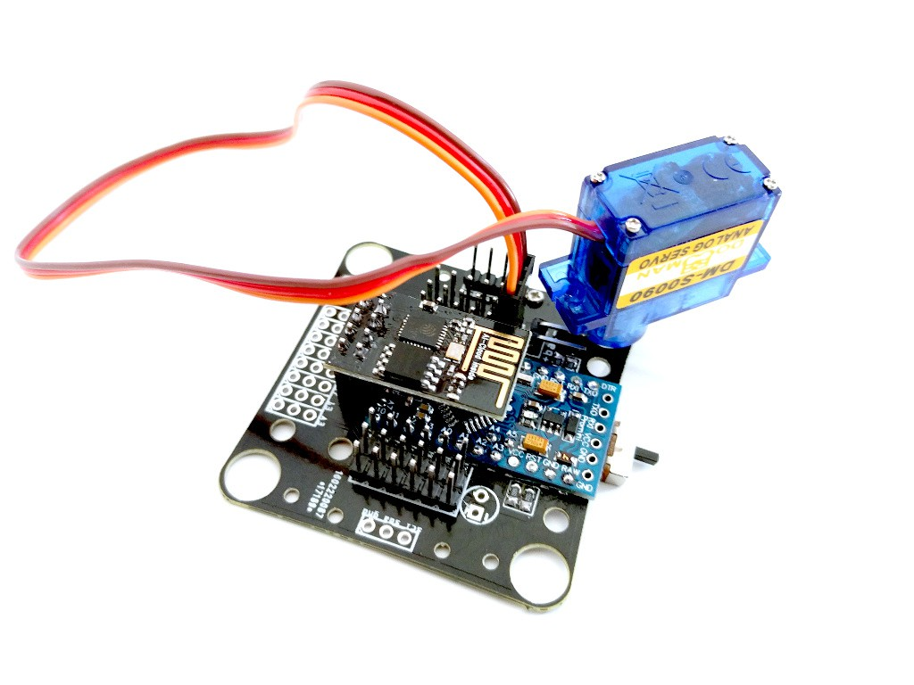

Mistakes and Workarounds¶
Published on 2016-03-10 in Tote HaD.
So… the PCBs arrived, and they are mostly fine… Mostly.
Turns out that I somehow managed to delete the trace that connected the power supply to the servos on the left side with the power supply of the servos on the right side. Which means that servos on one side don’t get any power. A quick soldering of a jumper wire solved the problem – but I will have to do it for every of the 10 boards. Sigh.
But otherwise it all seems to be fine.
Oh, except for the battery placement. It will have to go on the top of the robot (obscuring the Jolly Wrencher logo), because the ESP8266 on the bottom takes too much space on the bottom.
Here’s the PCB with everything soldered to it and with one servo attached:
